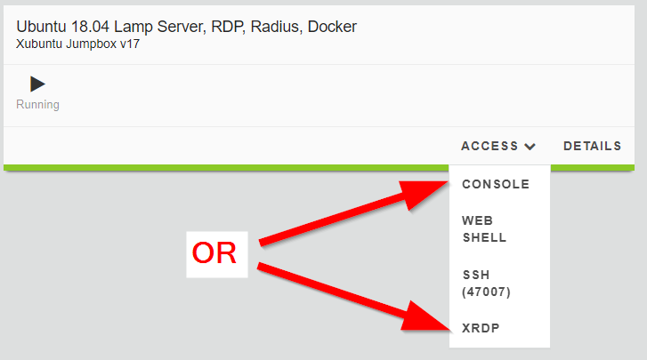
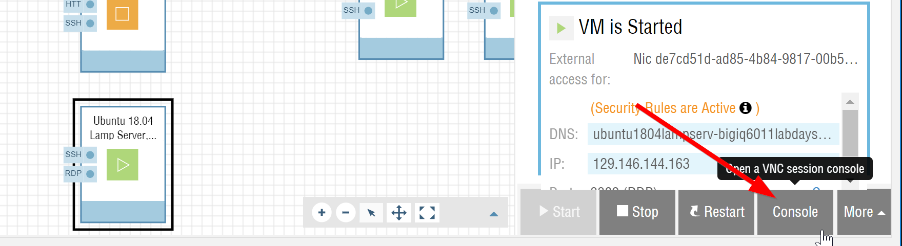
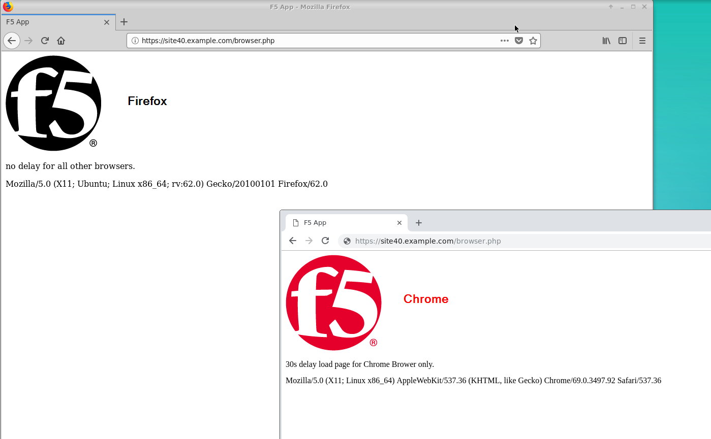
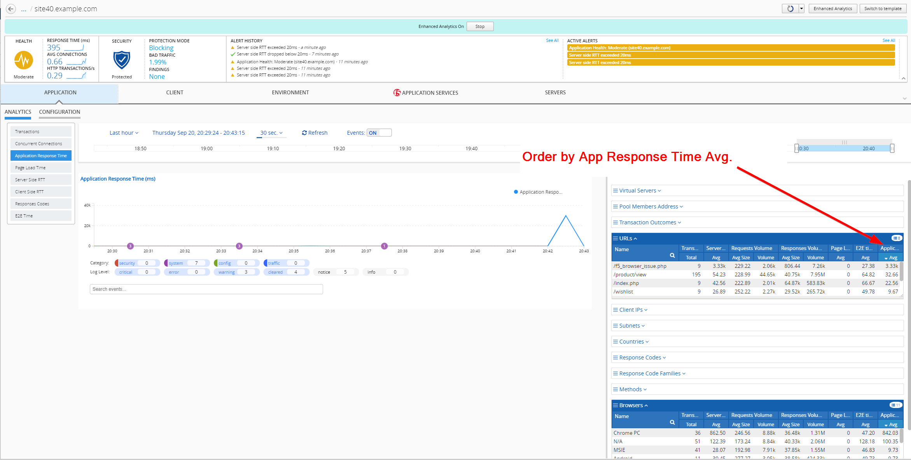

F5 BIG-IQ & Cloud Edition Lab > Class 3: BIG-IQ Analytics (Cloud Edition) > Module 2: Applications Troubleshooting Source | Edit on
Lab 2.3: Troubleshooting Application Response Time Browser¶
Connect as paul.
Select application
site42.example.comand turn on Enhanced Analytics, click on the button at the top right of the screen, and click on Start.
The Enhanced Analytics allows you to increase the application data visibility by collecting additional data for all, or specific, client IP addresses sending requests to the application.
Note
When this option is enabled, a banner appears at the top of the screen and highlights the application health icon in the applications list. Enhanced Analytics might be already turn on for site42.example.com
2. From UDF, launch a Console/RDP session to have access to the Ubuntu Desktop. To do this, in your UDF deployment, click on the Access button of the Ubuntu Lamp Server system and select Console or XRDP
{kind=link}
If you are using Ravello, select the Ubuntu Lamp Server and click on Console:
{kind=link}
You can use the copy/past feature if you are using the Console:

Open Chrome and Firefox and navigate on the website https://site42.example.com/f5_browser_issue.php.
Note
Go firt to https://site42.example.com to accept the private certificates.
A page f5_browser_issue.php is behaving differenty on Chrome compare to other browsers.
{kind=link}
Back to BIG-IQ Application dashboard, open application
site42.example.comand display the Application Response Time Analytics.
Expand the right-edge of the analytics panel to get the URLs and Browser filters. Order the URLs by App Response Time Average.
{kind=link}
If the Application Response Time column, click right on the blue portion of the table, select Columns, then select Avg under the Application Response Time:

Select the page f5_browser_issue.php, which has the highest value. Now all the values in all the other tables are about the page previously selected.
In the Browsers filter, notice the 30 sec Application Response Time for Chrome browser.